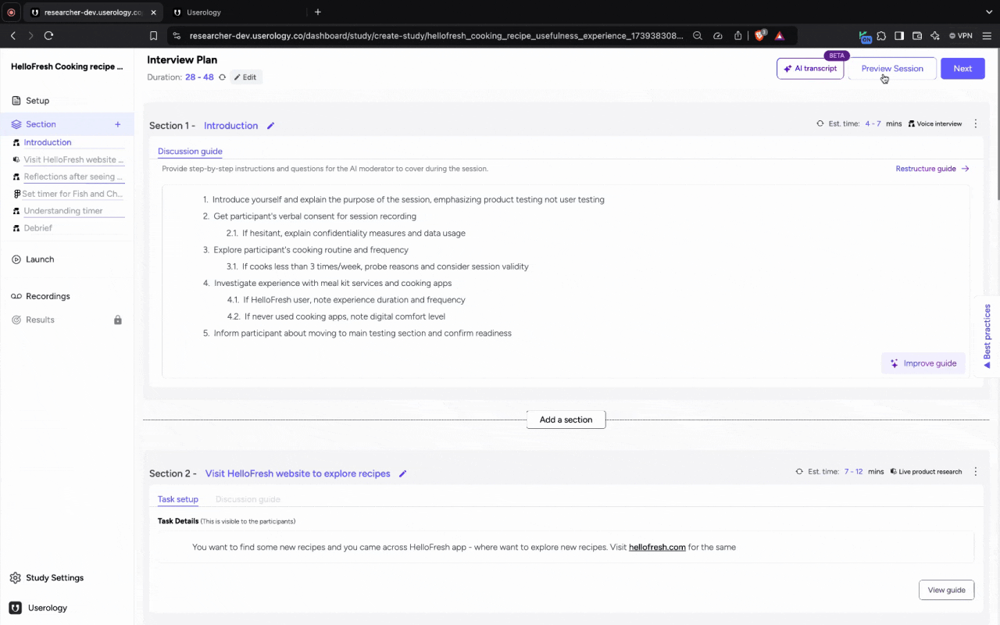
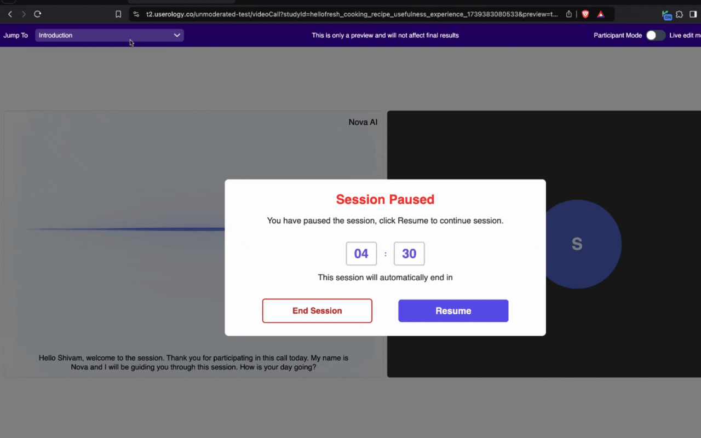
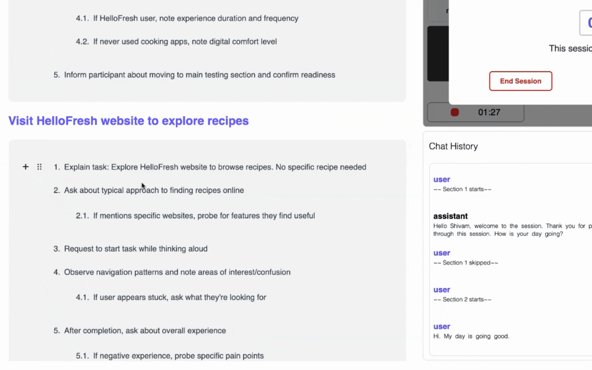

Previewing a session is an essential feature that allows users to review and refine their content before it goes live. It ensures that everything is in place and functioning as intended, providing a seamless experience for the end user. It has additional features to jump between sections and modify the guide.
Why Preview a Session?
-
Replicates Participant Experience: Preview mode allows moderators to experience the session as participants would, ensuring all elements are correctly configured.
-
Identify Issues Early: Provides an opportunity to spot and address potential problems before the session goes live.
-
Enhances Session Quality: Ensures that the interview plan and discussion guide are well-structured and error-free.
Note: To access preview, you should ensure the discussion guides for all the sections are generated
To Preview a session a, you can click on Preview Session on the Interview Plan or Launch page

What is the Difference Between Preview Session and Normal Session?
-
Preview session allows to skip between sections.
-
Preview session allows to view and edit interview guide during the session
-
Preview session allows to view transcript live of the session
Jump to Section Feature
-
Utilize the top navigation bar in preview mode to skip directly to specific sections.
-
Click on the desired section to jump without following the linear flow.
-
Allows you test specific parts of the session, such as a prototype task or a discussion point.
-
When time is limited, and you need to focus on particular areas of the session.

Live Edit Mode Feature
-
Let's you make real-time edits to the interview guide during the session.
-
View real time transcript of the current task

Note: The captions or prototype may overflow when Live edit mode is toggled on
Need Help? If you need further assistance, please email us at support@userology.co